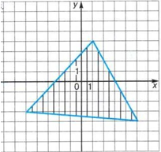

Вариант №11
Проверить принадлежность точки, координаты которой вводит пользователь (x, y – действительные числа), заштрихованной области или ее границе.

Проверить принадлежность точки, координаты которой вводит пользователь (x, y – действительные числа), заштрихованной области или ее границе.